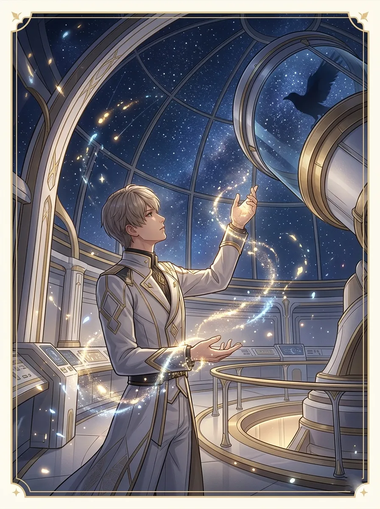
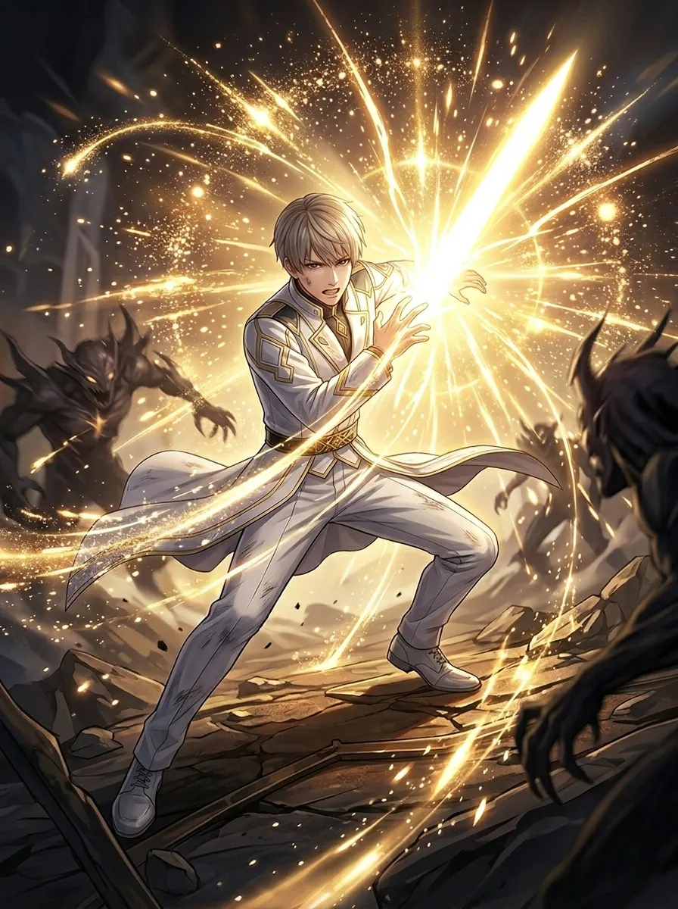
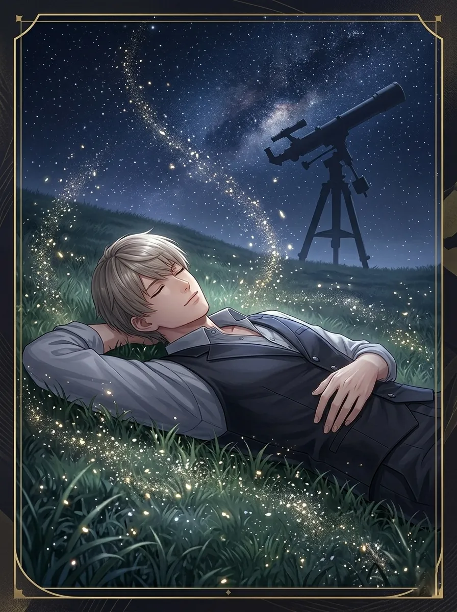
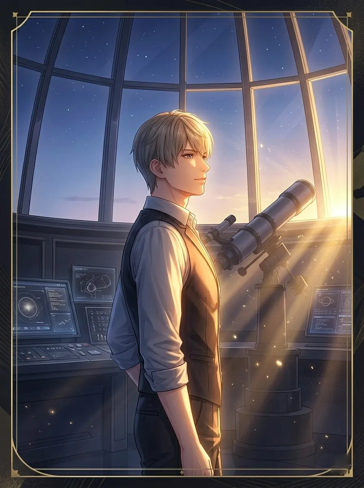
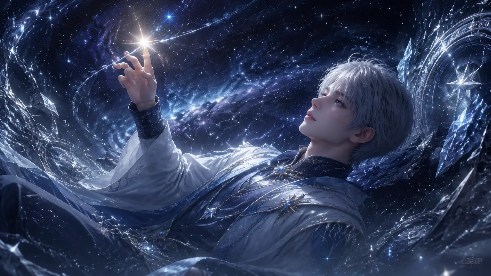
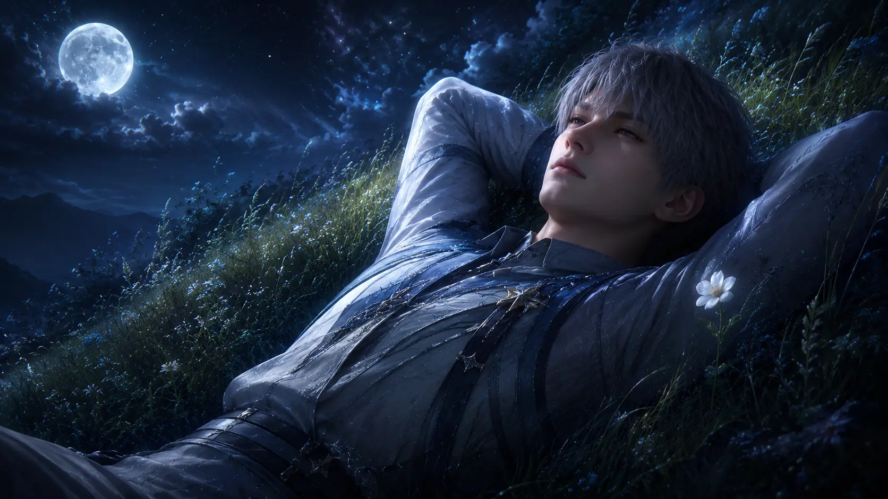
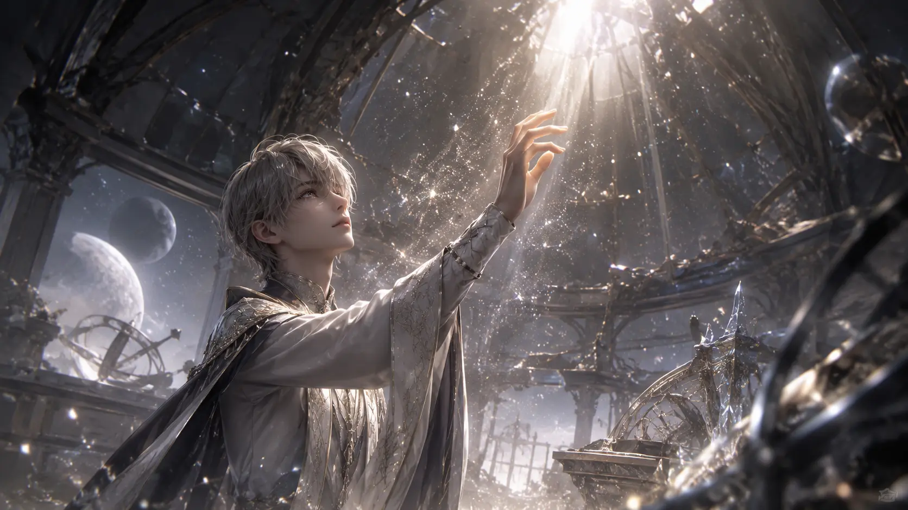

01. BIOGRAPHY & CHRONO ARCHIVE
His light Evol is pure and ancient, capable of refracting through the air to create decoys or solidifying into a blade that can cut through the hardest Wanderer cores. While most hunters rely on technical training, Xavier moves by instinct honed through thousands of battles. He doesn't just fight for the future; he fights to fulfill a promise made under a dying star long ago. To him, the present is a precious second chance, and he will not let the darkness extinguish it again.
02. TACTICAL SKILL BREAKDOWN
Basic Attack: Starshade Strike
Executes 5 rapid lunges. The final strike releases a 'Photon Flash' that marks all enemies, increasing their chance to be Critically Hit by 10%.
Resonance: Infinite Ray
Xavier and Hunter create a cage of light. Enemies within the perimeter have their DEF reduced by 30% and move in slow motion for 5s.
Ardent Oath: Solar Eclipse
Xavier momentarily reverts to his Knight-Commander form. A screen-wide horizontal slash deals 1500% DMG, ignoring 50% of the target's Armor.
03. ASCENSION & RANK BONUSES
04. OPTIMIZED PROTOCORE BUILDS
| Strategy | Primary Stats | Slot Focus |
|---|---|---|
| Flash Killer | Crit Rate / Crit DMG | Speed & Lethality |
| Sun Guardian | ATK / Energy Regen | Spam Resonance Skills |
05. COMBAT STRATEGY & ROTATION
Xavier is the highest-skill-ceiling character in Love and Deepspace, with damage entirely gated by frame-perfect execution. Unlike sustained DPS characters, Xavier's damage profile is spiked—over 80% of his damage comes from a 4-frame window during Solar Beam's active frames. Missing this window by even a single frame results in a catastrophic DPS loss. The key is to build 3 Solar Marks through basic attacks before entering Resonance, then unload Starshade Strike during the Weakness break window for maximum multiplier alignment.
Xavier's greatest weakness is his vulnerability during cooldown periods. After his burst window, he has a 12-second recovery phase where his DPS drops by nearly 60%. During this time, players should either switch to a sub-DPS or focus entirely on Perfect Dodges to build Energy for the next rotation. In co-op content, Xavier benefits enormously from a teammate who can provide consistent damage during his downtime—pair him with a sustain DPS like Rafayel for the best coverage.
- Basic Attack x3 to build 3 Solar Marks.
- Wait for enemy Weakness break or attack telegraph.
- Activate Resonance → immediately use Starshade Strike.
- Frame-cancel Solar Beam recovery at frame 22 (damage registers at frame 18).
- Follow with Basic Attack x2 → Skill for cleanup.
- Reserve Ardent Oath for the next Weakness window.
06. INTERCEPTED VOICE FILES
06. SIGNATURE MEMORIES

[STARGAZER]Solar Path - Core DPS
Lunar Path - Support

[LIGHT BLADE]Solar Path - Burst

[DREAMER'S REST]Lunar Path - Recovery

[FIRST LIGHT]Solar Path - Hybrid
Lunar Path - Defense

[BETWEEN STARS]Solar Path - Meditation
Solar Path - Eternity

[IN THE QUIET]Lunar Path - Stillness

[DUST OF YEARS]Lunar Path - Memory